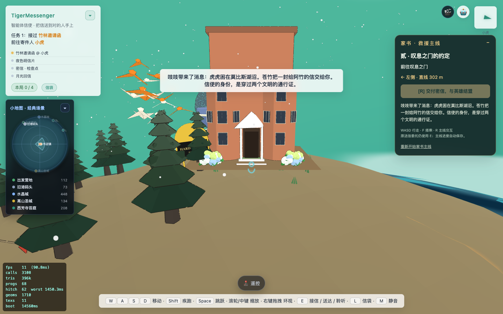
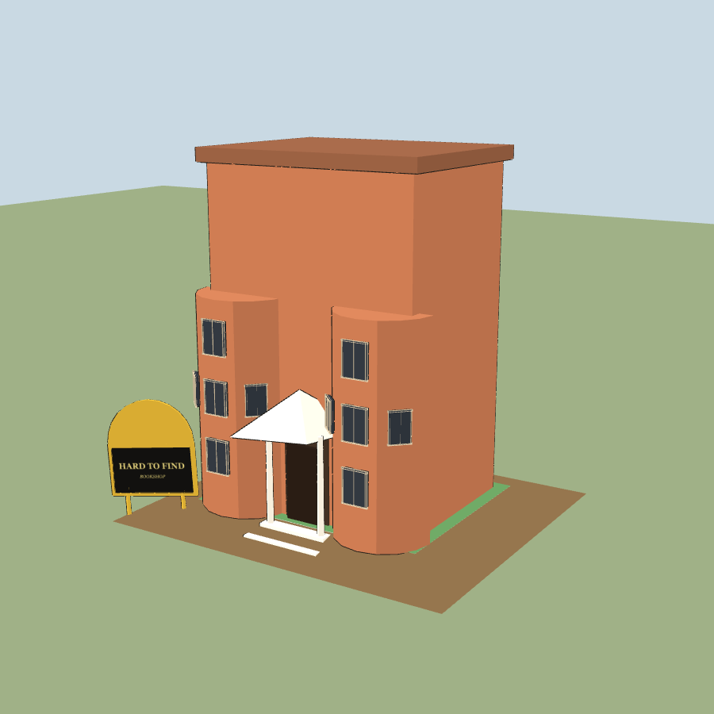
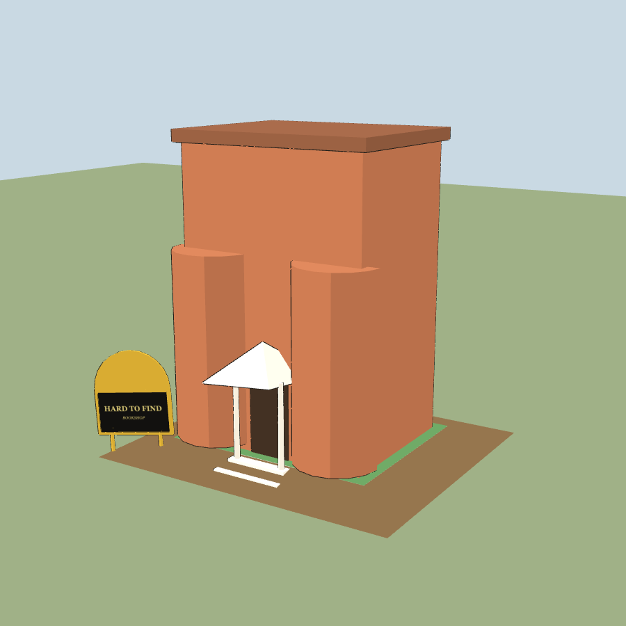
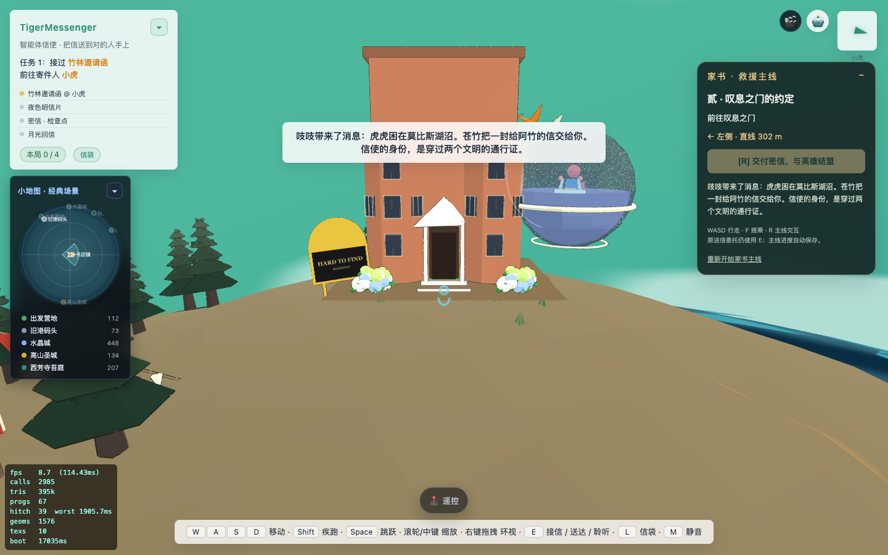
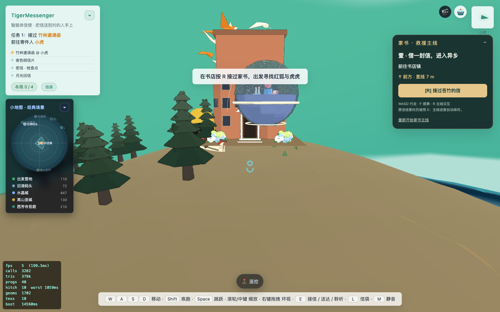

信使纪事 / 01
书不登船。信先过海。
霸天舰队索书之日四盏灯，
四盏灯，
一封信
书店镇
书店镇 · 四盏灯，一封信
书不登船。信先过海。
书店镇
潮退时，信使抵达书店镇。Hard To Find 的露台下，三家工坊书店刚开门：蝗虫在校准装卸架，蚂蚁端着第一杯茶，甲壳虫用车灯检查一箱尚未编目的书。门里留着一封从潮气边境寄来的《联藏约》。四家书店若共同签下，书目便互相保存，任何一家都不能替其余三家决定藏书的去向。
蚂蚁书店的钟响过两次，霸天舰队越过海堤。旗舰只给出一个条件：第三次钟响前，把四店藏书送上升降索，镇子就能免于炮击。蝗虫主张先藏维修图册，蚂蚁宁愿烧掉总目录，甲壳虫想把书目拆散抄进零件标签。Hard To Find 的店主没有争论哪本书最值得活。他把《联藏约》交给信使：“先让每家都签。谁也不能单独拿全镇做交易。”
信使把信收进衣襟，从门廊折回广场。蝗虫签下第一枚印，重型机器人随即离开装配架，守住坡道；蚂蚁签下第二枚印，把茶杯留在窗台，锅炉的蒸汽漫过廊口；甲壳虫签下第三枚印，车灯一束束亮起，为信使和居民标出通往海边的路。Hard To Find 最后落印。四盏门灯没有同时变亮，而是一盏回答另一盏。
第三次钟响时，运输艇已经压在广场上方。空降兵沿绳索落下，信使没有停在三店门前。他贴着拱廊往港口跑，机器人和工人守住的不是一排书架，而是他脚下那条路，以及路上还没来得及进门的人。炮火被蒸汽遮住时，甲壳虫的车灯仍在前面；绳索落到身后时，蝗虫的脚步正好挡在中间。
DUKE 的船长只肯再等一分钟。他看见信使空着双手，问：“书呢？”信使把签了四枚印的信递过去：“书不登船。把这个带到潮气边境。下一座镇若也收到索书令，就知道可以怎样回答。”NORTHWARD 的吊车停在头顶，系留飞艇仍压着缆绳。离岸的只有一封信，不是任何一家书店的藏书。
炮声向海面退去以后，蚂蚁才回到窗台。杯沿缺了一小块，茶已经凉了。甲壳虫把散开的标签重新夹回书箱，蝗虫将装卸架推回原位。没有人宣布胜利；四店只是按约定交换了第一批书目，好让任何一册都有不止一个安放之处。
信使沿坡道走回 Hard To Find。门还开着，海在廊灯下面，潮气边境在更远的云墙之外。他完成了一次很短的投递：从一家书店到三家书店，再到一艘船。镇上失去的东西写在伤亡簿里，没有被写进舰队的收货单。












